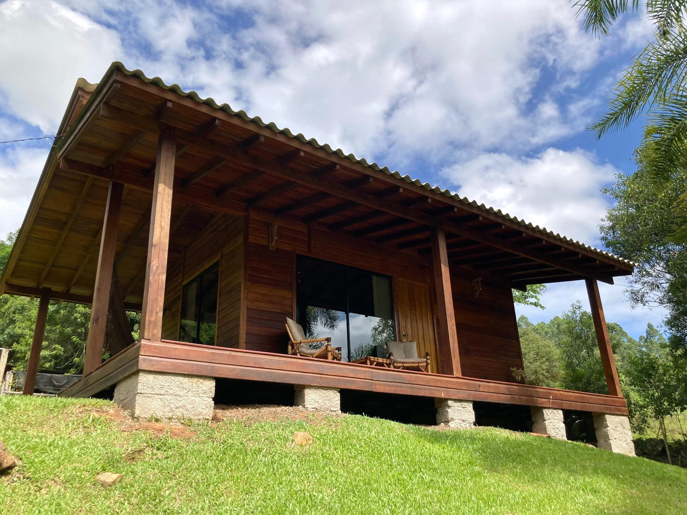
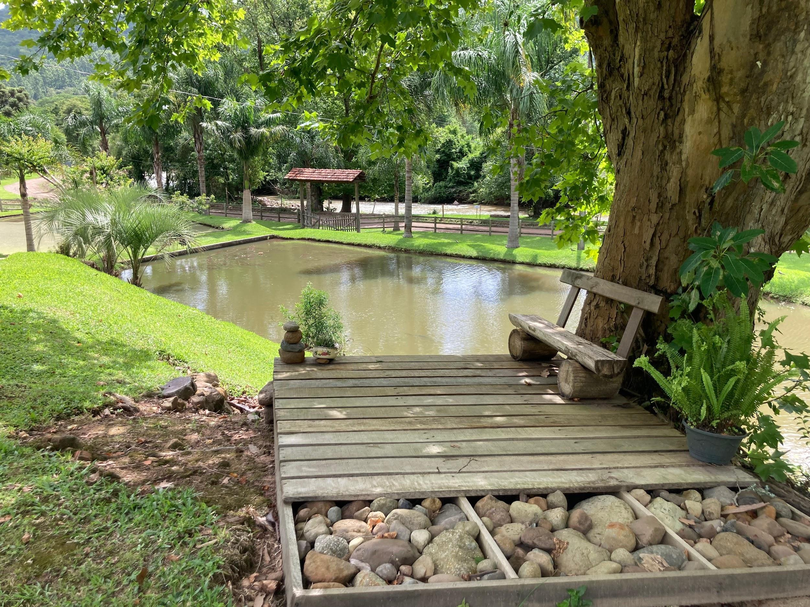

O Chalé Encosta da Serra, inaugurado em 2022, localiza-se na Estr. Padilha
Velha e é um refúgio tranquilo onde os visitantes podem desfrutar do conforto em
meio à natureza. Com um ambiente climatizado e equipado com lareira, uma cama
de casal, tv, banheiro e cozinha completa, o chalé oferece uma estadia
aconchegante para aqueles que buscam relaxamento e paz em meio a uma zona
rural, proporcionando o máximo de conforto aos hóspedes. Além disso, possui wifi
liberado e oferece bicicletas para passeio, permitindo que os visitantes explorem a
região circundante com facilidade e comodidade.

 - fundo verde.png)